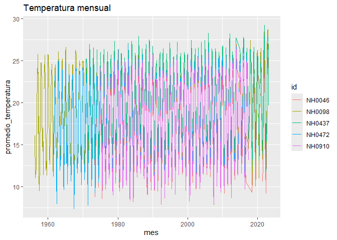

quecaloR permite leer, resumir y graficar datos diarios de estaciones meteorológicas del Instituto Nacional de Tecnología Agropecuaria (INTA), disponibles a través del Sistema de Información y Gestión Agropecuaria (SIGA). El paquete incluye datos de cinco estaciones y funciones para trabajar con ellos.
Instalación
Podés instalar la versión en desarrollo desde GitHub con:
# install.packages("pak")
pak::pak("Nana-0001/quecaloR")Ejemplos
El paquete incluye el set de datos datos_estaciones, con datos diarios de cinco estaciones:
library(quecaloR)
head(datos_estaciones[, c("id", "fecha", "temperatura_abrigo_150cm")])
#> id fecha temperatura_abrigo_150cm
#> 1 NH0472 1961-07-01 11.1
#> 2 NH0472 1961-07-02 5.5
#> 3 NH0472 1961-07-03 6.0
#> 4 NH0472 1961-07-04 NA
#> 5 NH0472 1961-07-05 12.4
#> 6 NH0472 1961-07-06 11.0Con tabla_resumen_temperatura() se obtiene el promedio y el desvío estándar de la temperatura de cada estación:
tabla_resumen_temperatura(datos_estaciones)
#> # A tibble: 10 × 3
#> id estadistico valor
#> <chr> <chr> <dbl>
#> 1 NH0046 promedio 17.3
#> 2 NH0046 desvio_estandar 5.90
#> 3 NH0098 promedio 18.6
#> 4 NH0098 desvio_estandar 5.98
#> 5 NH0437 promedio 20.2
#> 6 NH0437 desvio_estandar 5.77
#> 7 NH0472 promedio 18.0
#> 8 NH0472 desvio_estandar 5.94
#> 9 NH0910 promedio 17.7
#> 10 NH0910 desvio_estandar 6.12Con grafico_temperatura_mensual() se grafica el promedio mensual de la temperatura:
grafico_temperatura_mensual(datos_estaciones, titulo = "Temperatura mensual")
#> Warning: Removed 1 row containing missing values or values outside the scale range
#> (`geom_line()`).
Con leer_estacion() se descarga y lee una estación del repositorio del curso:
nh0437 <- leer_estacion("NH0437", "data-raw/NH0437.csv")Para más detalles, mirá la viñeta del paquete y la documentación de cada función (por ejemplo ?tabla_resumen_temperatura).
Cómo contribuir
Si querés contribuir, leé la guía de contribución y el código de conducta.